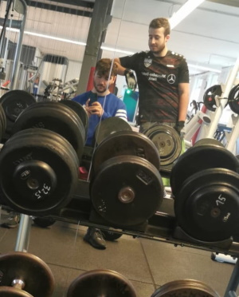

Geboren: 30.07.2000
Abschluss: Allgemeine Hochschulreife (2018 in Schramberg)
Berufliche Erfahrung: Freiwilliges soziales Jahr (2018-2019)
PVD-Sonderbeschichtung, Hansgrohe
Schiltach (2019-2020)
Studiengang: OMB
Semester: 2
Matrikelnummer: 266583
E-Mail: HFU-Mail
Studienanschrift: Berneckstraße 142
78713 Schramberg
Deutschland
Leidenschaftlicher Instagrammer
Shisha rauchen
Fitness / Krafttraining
Beste Playlist
nach oben